A fall wreath is the fastest single signal that the season has arrived, hanging on the one surface every visitor sees first.
Getting it right involves more than picking a pretty style, color, size, material, and the door it is hanging on all matter too.

When to Display It
A wreath built around harvest elements rather than Halloween-specific ones stays appropriate from September all the way through Thanksgiving.
This single choice extends a wreath's display window by months, compared to one that reads as exclusively Halloween-themed.
The Best Materials to Work With
Dried flowers bring real texture and a soft, romantic quality that fresh or faux flowers cannot quite replicate.
Grapevine forms a sturdy, naturally textured base that works equally well bare or built up with other materials.
Wheat and dried grasses bring a warm, harvest-specific feel that few other materials capture as directly.
Pumpkins and gourds, whether real, faux, or miniature, are the most immediately recognizable fall material on this entire list.
Getting the Size Right
A wreath that is too small reads as an afterthought on a full-size front door, while one too large can overwhelm a smaller entry.
As a general rule, a wreath spanning roughly a third to half the door's width looks proportional on most standard door sizes.
Matching the Wreath to the Door
A colored door benefits from a simpler, more neutral wreath, letting the door's own color stay the star rather than competing with a bold wreath palette.
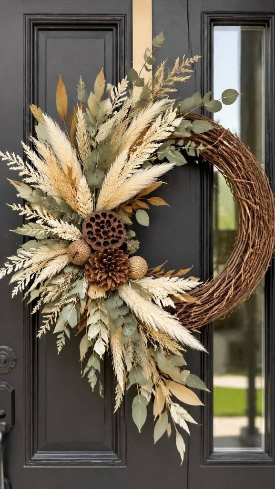
A wood door pairs naturally with neutral or traditional warm tones, since the door itself already carries a similar natural material story.
A black door calls for a wreath with enough lighter, warmer tones to avoid the whole look reading as too dark and heavy.
A white door gives a wreath the most contrast room to work with, letting almost any color or material read clearly against it.
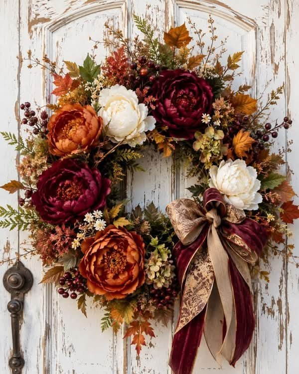
Buying vs. Making One
A store-bought wreath makes sense for anyone short on time or without easy access to the raw materials a DIY version needs.
Making one from scratch makes more sense when a very specific color or material combination matters, since that level of customization is hard to find pre-made.
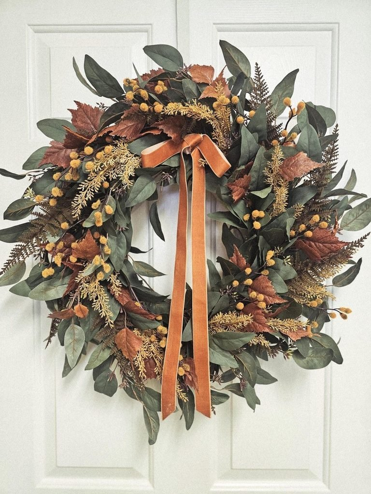
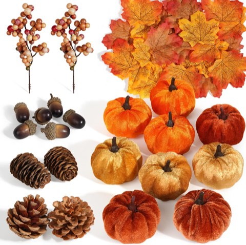
Artmag 51 Pcs Artificial Fabric Pumpkins, Fall Harvest Decor with Acorns and Pinecones
Shop on AmazonChoosing the Right Colors
Traditional warm tones, burnt orange, deep red, golden yellow, are the most immediately recognizable fall palette, and the safest choice for anyone unsure where to start.
A neutral palette, leaning into cream, tan, and soft brown, reads as more sophisticated and blends into more home styles than a bold traditional mix.
A moodier, deeper autumn palette, plum, rust, near-black greenery, brings real drama for anyone wanting something less conventional.
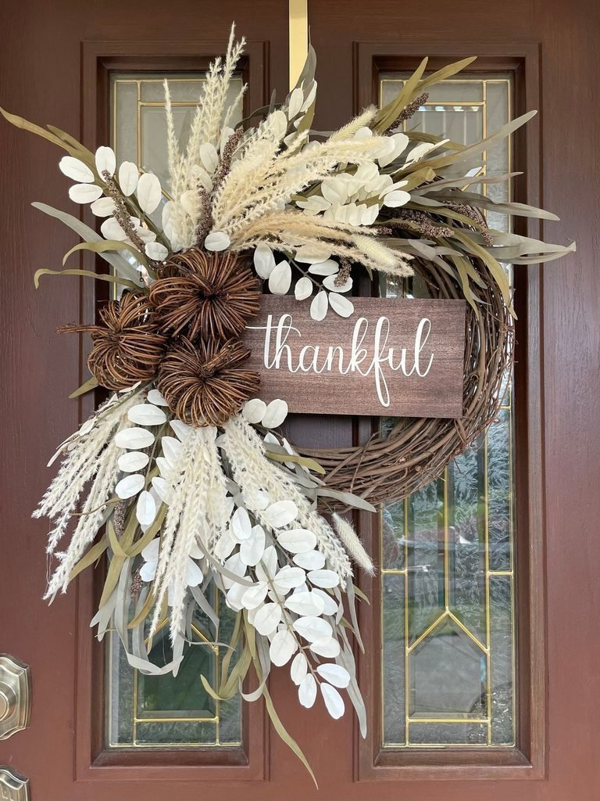
What Makes a Fall Wreath Actually Look Good
Natural texture is what separates a wreath that reads as genuinely seasonal from one that looks like a flat craft-store prop.
Mixing a few different textures, something dried, something woven, something with real dimension, does more visual work than color alone.
Fall Wreath Styles Worth Trying
1. Cottage-Style
A fuller, slightly looser arrangement with a soft color mix brings a relaxed, lived-in charm suited to a more cottage-leaning home.
2. Minimalist
A few carefully chosen elements, with real negative space between them, bring a modern restraint that a fuller, denser wreath does not offer.
3. Simple Neutral Palette
Keeping the palette simple, cream, tan, soft brown, lets texture and shape carry a wreath that skips bold color entirely.
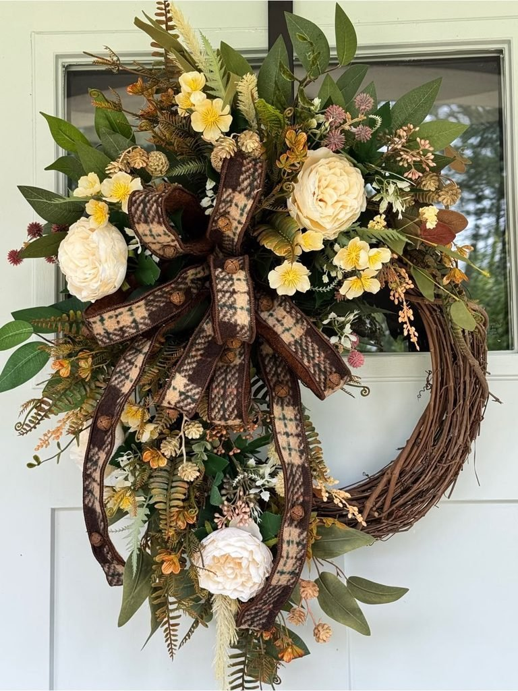
4. Fall Berries
Clusters of fall berries bring small pops of deep color that work beautifully layered into a more neutral or natural base.
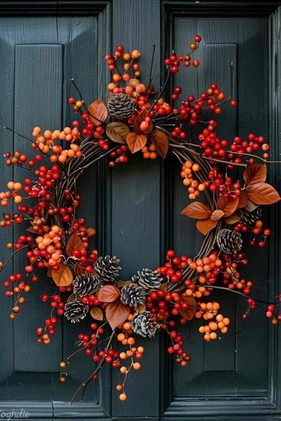
5. Natural Fall Leaves
Leaves arranged to look genuinely windswept, rather than perfectly symmetrical, read as far more natural and considered.
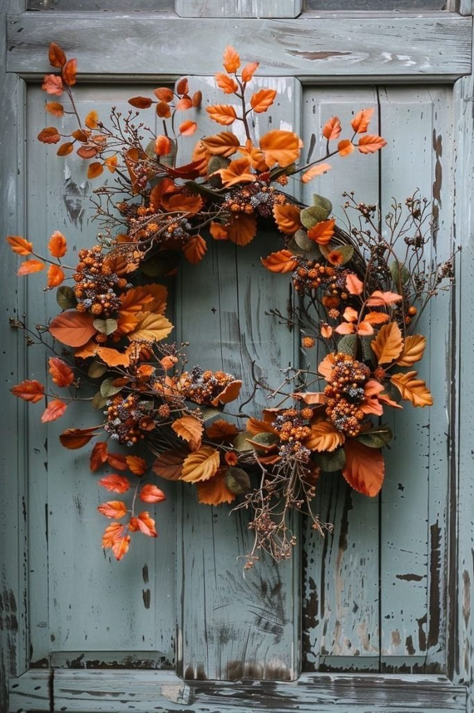
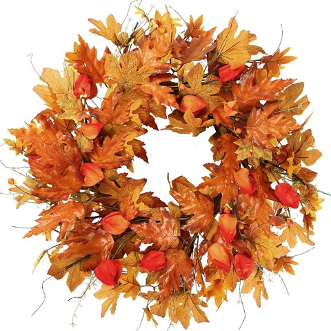
Sggvecsy 21 Inch Fall Wreath with Orange Maple Leaves and Lantern Fruit
Shop on Amazon6. Rustic With a Plaid Ribbon
A plaid ribbon woven through a natural-material base brings classic, cozy character that feels distinctly autumnal.
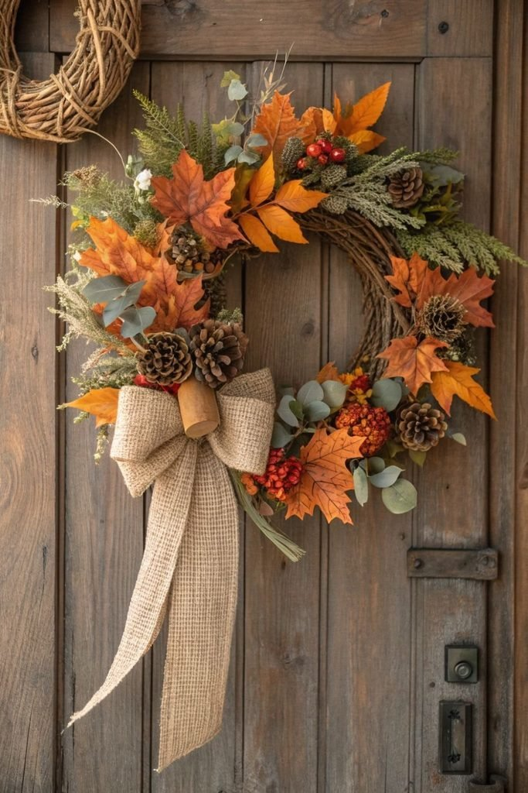
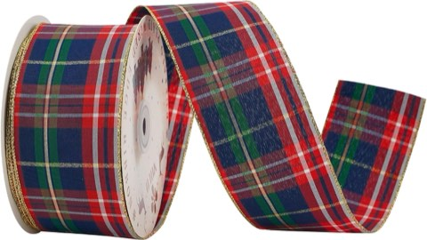
MEEDEE Tartan Plaid Wired Ribbon, 2.5 Inch Wide, 25 Yards, Red and Navy
Shop on Amazon7. Dried Hydrangea
Dried hydrangea blooms bring a soft, romantic texture that pairs beautifully with almost any fall color palette.
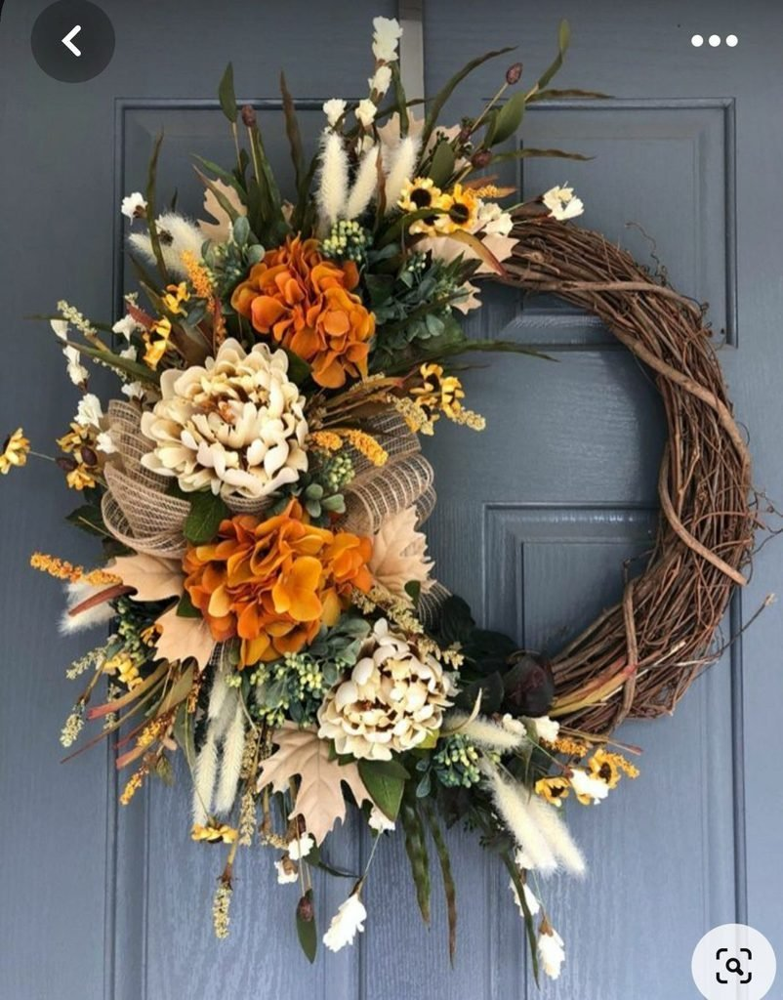
8. Wheat and Dried Grass
A wreath built primarily from wheat and dried grasses brings genuine harvest character without needing bright color to do the work.
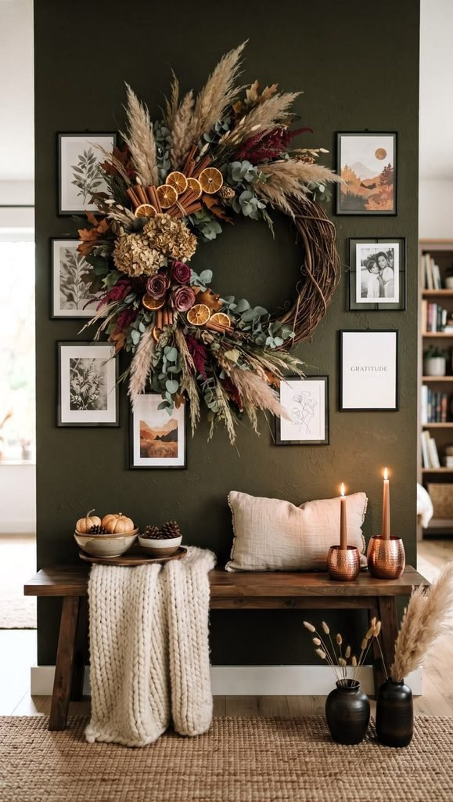
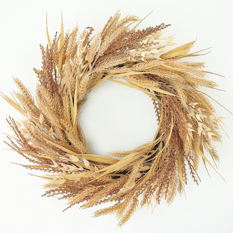
MIZII 19 Inch Beige Fall Wreath with Artificial Wheat Stalks and Leaves
Shop on Amazon9. Pumpkin and Eucalyptus
Pairing small pumpkins with eucalyptus brings a fresh, slightly unexpected combination that still reads as clearly seasonal.
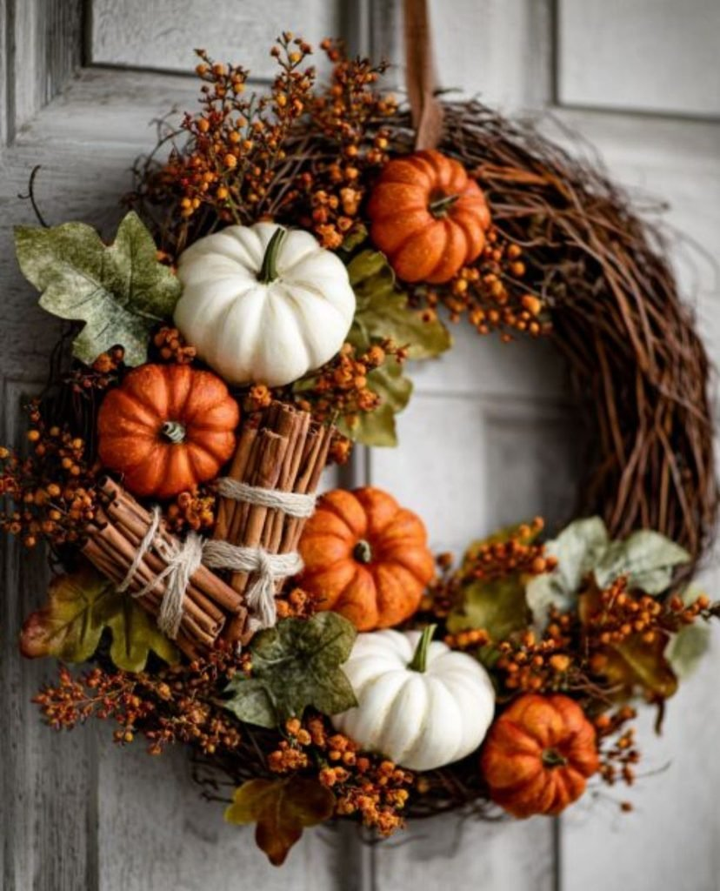
Making It Look More Expensive
Layering at least three different textures, rather than relying on one dominant material, is the simplest formula for an elevated-looking wreath.
Adding one slightly oversized or unexpected element, a large bloom, an unusual ribbon, often does more than an even, symmetrical arrangement ever could.
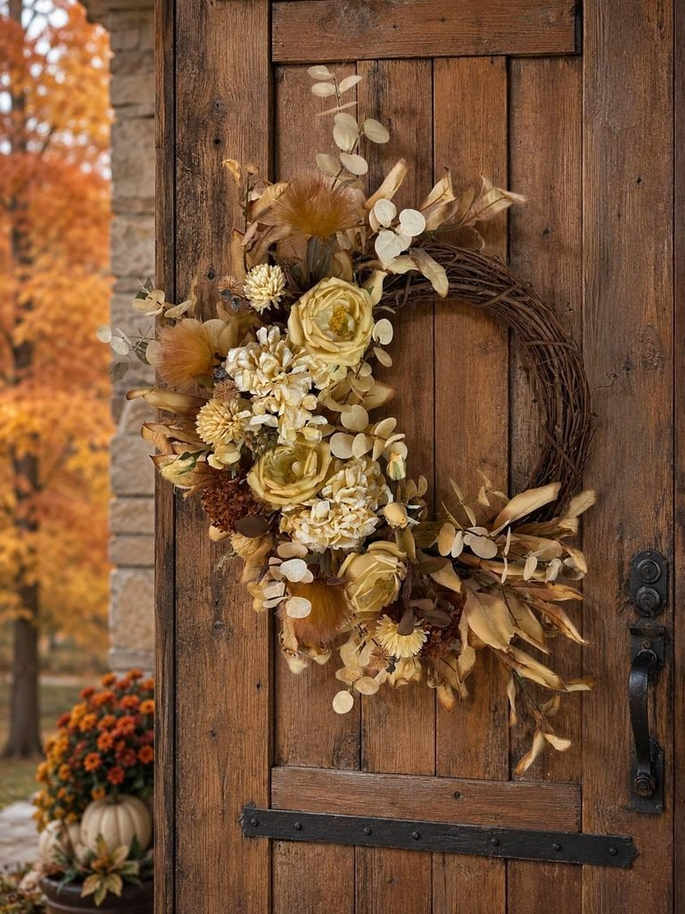
Zoe Deco Big Bow, 30 Inch, Red Giant Bow for Gifts
Shop on AmazonHanging It Without Damaging the Door
An over-the-door hook distributes the wreath's weight without requiring a single nail or screw, protecting the door's finish entirely.
For a heavier wreath, a suction hook rated for the actual weight avoids the sagging or slipping a lighter-duty hook cannot handle.
Making It Last Longer
Choosing genuinely durable materials from the start matters more than any care routine applied after the fact.
Keeping the wreath out of direct sun prevents the fading that ends a wreath's good looks well before the season actually ends.
Storing it properly between uses, rather than leaving it exposed to the elements, meaningfully extends how many seasons it can be reused.
Final Thoughts
None of these nine styles is the single correct fall wreath, the right one depends on the door, the home's existing style, and how long it needs to last through the season.
Get the color, size, and material right, and the style choice becomes the easy, fun part.
Start with whichever door-matching advice fits the actual front door, and let the style follow from there.